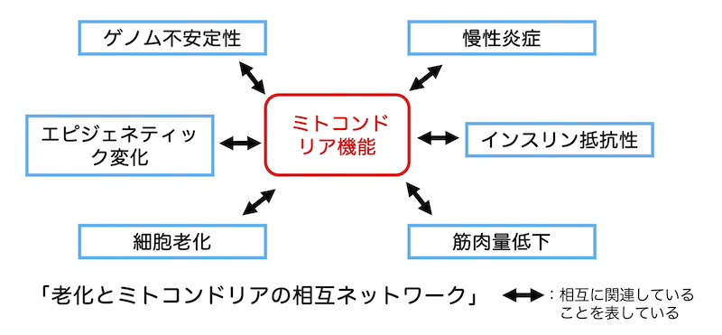
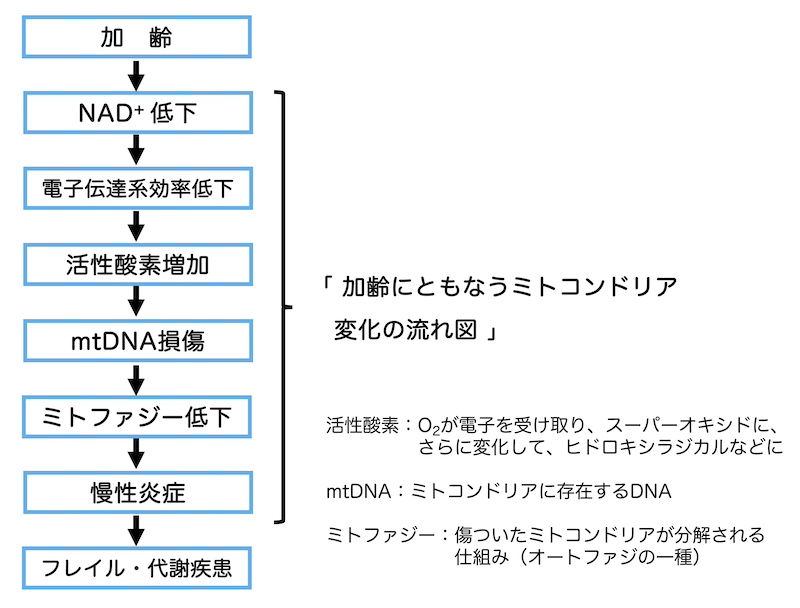
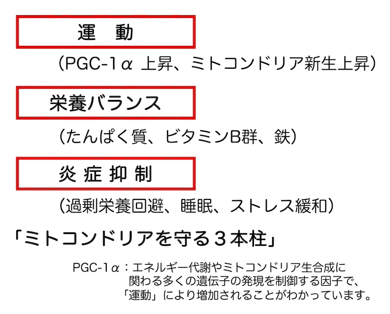

公開日：2026年5月｜最終更新：2026年7月
私たちの体は、約37兆個の細胞からできています。その一つ一つの細胞の中に数百個あるのが、「ミトコンドリア」です。ミトコンドリアは、食事から得た栄養素を使って「エネルギー（ATP）」を作っています。ATPを電気だとすれば、ミトコンドリアは、いわば「体の中（細胞の中）の発電所」です。
「歩く」「考える」「心臓を動かす」「呼吸する」これらすべては、ミトコンドリアが作るエネルギー（ATP）によって支えられています。
ミトコンドリアの機能は、加齢とともに次第に衰えますが、この「ミトコンドリアの機能を守るための生活習慣」を考えます。
年齢とともに、
その背景の一つに、「ミトコンドリアの働きの低下」があると考えられています。
加齢により、
老化とは単に年を重ねることではなく、「細胞の発電力が少しずつ弱まる過程」と捉えることもできるでしょう。

近年、「慢性炎症」が老化を進める重要な要因であると注目されています。
機能の落ちたミトコンドリアは「活性酸素」を増やし、炎症反応を高めます。逆に炎症が強い状態では、ミトコンドリアもさらに傷みます。
この悪循環が、「動脈硬化」、「糖尿病」、「認知機能低下」、「フレイル」などと関係していると考えられています。

ミトコンドリアが働くためには、タンパク質、ビタミンB群、鉄、NAD＋の材料、CoQ10などさまざまな栄養素が必要です。
しかし重要なのは、栄養は「必要条件」ではあっても「十分条件」ではないという点です。
サプリメントだけで若返るという確かな証拠は、現在のところありません。
科学的に確認されている最も確実な方法は「運動」です。
運動は新しいミトコンドリアの産生を促し、傷んだものを除去し、炎症を抑え、身体に好影響を及ぼします。
これらが、細胞レベルでの若さを支えています。
参考文献：Little JP et al, J Physiol (2010)
これらが、ミトコンドリアを守るための重要なポイントです。
特別な若返り法があるわけではなく、これら日々の積み重ねこそが、「健康寿命」を支える基盤になります。

「喫煙」はミトコンドリアDNA損傷、電子伝達系機能低下など多面的な悪影響を及ぼします。
アルコール代謝ではNAD⁺が消費され、酸化ストレスが増大します。過量摂取はミトコンドリア機能障害を引き起こします。
老化は一つの原因で決まるものではありません。しかしミトコンドリアは中心的な役割を担っています。
「細胞の発電所を守る」という視点が、これからの健康づくりの柱になるかもしれません。